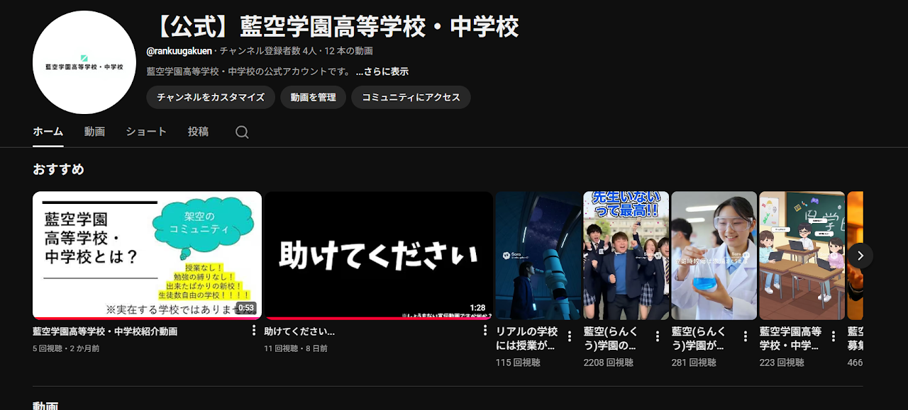
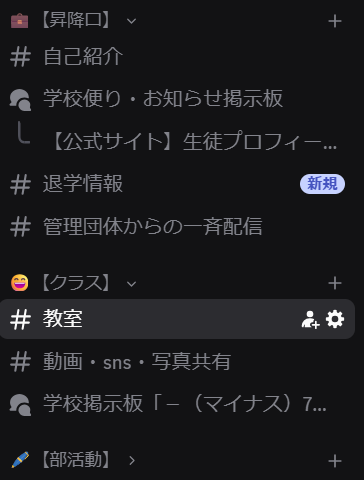

![[メイン画像:rankuugakuen.jpg]](rankuugakuen.jpg)
Discord発祥のオンライン型学園
この学園は、学生が日々の疲れを癒すことを目的とした、授業なしの学園です。もちろん実在する学園ではありませんが、学生をメインで募集しているので、新しい交流を造ることができます。
藍空学園公式YouTubeチャンネル・Lemon8アカウントもあります！

![[unnamed.jpg]](unnamed.jpg)


学園生活を彩る、目的別チャンネル構成

藍空学園では、あなたの興味や活動を後押しするよう、チャンネルを体系的に構成しています。
- 自己紹介：その人のことを知り、話すきっかけを作る。
- 教室：何気ない会話で場の空気を盛り上げる。
- 部活動：自分の好き・得意を発揮する。
- 校内施設：悩みを相談したりする。
もしもの時も安心
当サーバーでは、「EarthQuickly」を導入済みです。もしもの地震でもいち早くお知らせをし、素早く身を守ることができます。
![[dadad.png]](dadad.png)